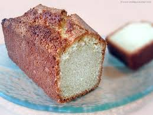

Quatre Quarts

Description
Le quatre-quarts est un gâteau breton qui tire son nom du fait que les quatre ingrédients qui le composent (farine, sucre, beurre, œufs) y sont en quantité égale (en masse), et donc représentent chacun un quart.
On pense que le quatre quarts est d'origine nord-européenne et remonte au début des années 1700. Une recette pour le gâteau de livre est dans le premier livre de cuisine américain, American Cookery , qui a été publié en 1796.
Pour: 6 personnes
Difficulté: Facile
Coût: $$$$
Ingrédients
- 250 g d'œufs entiers (3 à 5 oeufs selon leur taille)/em>
- 250 g de beurre
- 250 g de sucre en poudre
- 250 g de farine
- une pincée de sel fin
Garnitures
- nutella
- confiture
- boule de glace vanille
Etapes de préparation
- Pour réaliser cette recette de quatre-quarts commencer par préparer tous les ingrédients.
- À feu très doux, faire fondre le chocolat en pistoles avec le beurre
- Clarifier les oeufs tout en mélangeant au fouet
- Dans une bassine pâtissière, verser le sucre en poudre sur les jaunes d'œufs tout en mélangeant au fouet
- Ajouter enfin la farine tamisée et mélanger
- Lorsque le mélange chocolat/beurre est fondu le rajouter au mélange : jaunes d'œufs + sucre + farine.
- Bien mélanger au fouet.
- Ajouter une pincée de sel fin dans les blancs d'œufs (froids de préférence). Les monter en neige bien ferme...
- Verser les blancs en neige sur la préparation chocolatée.
- Mélanger délicatement à l'aide d'une spatule type maryse.
- Verser la pâte dans le moule.
- Cuir dans un four préchauffé à 220° pendant 20 à 25mn.
- Laisser refroidier et ajouter le sucre glace puis la boule vanille au moment de servir.
Bon appétit !
 -> Retour à la page principale
-> Retour à la page principale